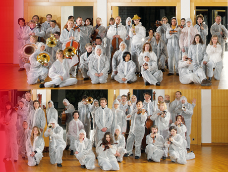

basel sinfonietta «From Scratch»
| 9. November 2011 | ||
| 20:30 |
//‹›‹›› Rote Fabrik, Zürich‹›Aktionshalle‹‹›‹› |‹›‹›› Fr. 35.–/30.– Erm. Reservation.‹‹›‹› |‹›‹››
›
‹›‹›› 60 MusikerInnen: 2-3-3-2 2-2-2-1 Schlagzeug 3-12-10-8-6-4› Leitung: Manuel Nawri‹› CH ‹‹›‹› «From Scratch» Auftragswerke der basel sinfonietta von : Jürg Frey (*1953) «Louange de l’eau, louange de la lumière»› Tim Parkinson (*1973) «Orchestra Piece» (2007)› Michael Parsons (*1938) «Paraphrase For Orchestra»› James Saunders (*1972) «Things Whole And Not Whole»› Christian Wolff (*1934) «Spring Two»‹‹›‹› |‹›‹››
‹›‹››
‹››

{kind=link}
›
|‹› From Scratch‹‹› |‹›› Es war eine Zeit der Rebellion, der Neuordnung, der Experimente. Eine Zeit, in der sich eine junge, zunehmend selbstbewusste Generation gegen das etablierte Wertesystem eines konservativen Bürgertums zur Wehr setzte. Eine Umbruchszeit, in der nahezu alle Bereiche des gesellschaftlichen Lebens einer radikalen Neudefinition unterzogen wurden. Als der englische Komponist Cornelius Cardew 1969 in London das Scratch Orchestra ins Leben rief, lag die Idee eines Neuanfangs (englisch: to start from scratch, zu Deutsch: ganz von vorne beginnen) gewissermassen in der Luft: Raus aus den Konzertsälen, die als Kulturtempel ausgedient hatten! Hinweg mit der geschlossenen Werkidee, der sakrosankten Partitur! Schluss mit der Trennung zwischen ZuschauerInnen und Ausführenden! Weg mit den gängigen Hierarchien unter den Musikern! Mit ihren ungewöhnlichen, nach eigenen Massgaben gestalteten Konzertprojekten, mit neuen grafischen Notationsformen, mit ihrer kompromisslosen Forderung nach Authentizität der Kunst erregten die 50 MusikerInnen bis zur Auflösung des Orchesters Mitte der 70er Jahre breites Aufsehen. Was ist von den «scratchern» geblieben? Die basel sinfonietta, eine im Geiste durchaus verwandte Institution, begibt sich auf eine spannende Spurensuche: Von Michael Parsons, der zu den Gründungsmitgliedern des «Scratch Orchestras» zählt, über den US-Amerikaner Christian Wolff, der zentrale Werke für das Ensemble geschrieben hat, bis hin zu einer neuen Generation: James Saunders, Tim Parkinson und auch der Schweizer Jürg Frey sind, jeder auf seine eigene Weise, in ihren musikalischen Handschriften von der freiheitlichen Atmosphäre und kreativen Offenheit des Scratch Orchestras beeinflusst.
›
›Mit einem Programm, das Werke der Komponisten Christian Wolff, James Saunders, Michael Parsons, Tim Parkinson und Jürg Frey umfasst, vertieft die basel sinfonietta in konsequenter Weise ihr Profil als Klangkörper, der vor 30 Jahren (wie die Rote Fabrik) aus einem Zusammenschluss von MusikerInnen entstanden ist, mit dem Wunsch, organisatorische, programmatische und künstlerische Entscheidungen in basisdemokratischer Eigenverantwortung zu treffen. Auch in der 31. Konzertsaison der basel sinfonietta erweist sich das Modell der Selbstverwaltung und demokratischen Mitbestimmung als identitätsstiftendes Wesensmerkmal des Orchesters.
›
›Der strukturelle Wunsch, bestehende Hierarchien aufzulösen, spiegelt sich in künstlerischer Weise in den Orchesterstücken der britischen Komponisten James Saunders, Tim Parkinson, Michael Parsons und in den Werken des US-Amerikaners Christian Wolff wider. Der organisatorischen Eigenständigkeit der basel sinfonietta entsprechend lösen die Komponisten in ihrer Konzeptmusik die tradierte Hierarchie zwischen Partitur, Musiker und Dirigent zugunsten einer Offenheit gegenüber dem musikalischen Material auf, das als kollektive künstlerische Äusserung bei jedem Konzert von den Orchestermusikern neu «komponiert» und zusammengesetzt wird. Das Werk entsteht und vervollständigt sich, analog zu den aleatorischen Konzepten eines John Cage, erst in der jeweiligen Verklanglichung der Aufführung. Der klassische Werkbegriff wird in Frage gestellt. Die innovative kompositorische Anlage setzt somit dem Wunsch der basel sinfonietta nach künstlerischer Mitbestimmung fort.
›
›Christian Wolff (* 8. März 1934 in Nizza)› ist ein US-amerikanischer Komponist mit deutschen Eltern. Er studierte Altphilologie an der Harvard University und unterrichtete das Fach und Musik bis zu seiner Pensionierung am Dartmouth College in New Hampshire. ?Christian Wolff wurde als Sohn des ersten Kafka-Verlegers Kurt Wolff in Frankreich geboren, wuchs aber in den USA auf, wo er ab 1941 seine Schulzeit in New York verbrachte. Seit 1948 hatte er Klavierunterricht bei Grete Sultan, die seinen Eltern von der Pianistin Katja Andy empfohlen worden war. Als er 1950 Grete Sultan seine ersten Kompositionen zeigte, meinte sie, er solle Unterricht bei John Cage nehmen, mit dem sie eng befreundet war. So lernte er durch sie bereits als 16-Jähriger den Komponisten John Cage und seinen Kreis kennen, zu dem Morton Feldman, Earle Brown, der Pianist und Komponist David Tudor, der Tänzer und Choreograph Merce Cunningham, aber auch Maler wie Robert Rauschenberg, Mark Rothko oder Philip Guston gehörten.?Wolff schenkte Cage das Buch «I Ging», das sein Vater verlegt hatte. Das Buch hatte einen entscheidenden Einfluss auf Cages weitere Kompositionspraxis. Wolff war der Jüngste in einer Gruppe von Musikern und Komponisten, die in Anlehnung an die New York School der genannten Maler des Abstrakten Expressionismus – der ersten von Europa unabhängig kreierten Kunstform Amerikas nach dem Jazz – bald ebenso genannt wurde und deren herausragendste Köpfe Cage, Feldman, Brown und Wolff waren.?Wolff engagierte sich später auch politisch, was sich in einer Reihe von Werken niederschlug. Beispiele sind «Accompaniments» für einen singenden Pianisten mit Texten aus dem Buch «China: The Revolution Continued», «Bread and Roses» für Violine nach dem gleichnamigen Lied der Frauenbewegung oder die Werkreihe «Peace Marches».
›
›Michael Parsons (geboren 1938)› ist Komponist und Musiker und gilt als einer der Pioniere der experimentellen Musik in England. Er gründete 1969 gemeinsam mit Cornelius Cardew und Howard Skempton das Scratch Orchestra. Eine Zusammenstellung seiner Kompositionen für Klavier wurde vor kurzem von Mathieu Copeland veröffentlicht (Michael Parsons: «Piano Music 1993-2007», Klavier: John Tilbury).
›
›James Saunders› ist ein Komponist, der seit 2000 an einer erweiterten modularen Komposition arbeitet, «#[unassigned]». Er ist Direktor des Centre for Musical Research an der Bath Spa University, wo er das Projekt Words and Music betreut, das vom AHRC (Arts & Humanities Research Council) finanziert wird; ausserdem leitet er das Ensemble für experimentelle Musik Material. Seit Ende 2008 hat er begonnen, distributed work und weitere musikalische Serien zu entwickeln. Seine Musik wurde auf zahlreichen internationalen Festivals aufgeführt, darunter: Bludenzer Tage zeitgenössischer Musik, Brighton Festival, Darmstadt, Donaueschingen und Wittener Tage für Neue Kammermusik. Seine Musik wird von BBC Radio 3 und Resonance FM (GB), WDR3 und SWR2 (Deutschland) sowie vielen anderen nationalen Radiostationen übertragen. 2003 und 2007 war er Composer in Residence beim Experimentalstudio für Akustische Musik in Freiburg. James hat mit London Sinfonietta, Ensemble Modern und ensemble recherche zusammengearbeitet. Als Musiker spielt er im Duo Parkinson Saunders gemeinsam mit dem Komponisten Tim Parkinson. Er ist auch mit Alvin Lucier, Christian Wolff und Phill Niblock aufgetreten. 2010 hat das SWR bei ihm eine Arbeit für das von Sylvain Cambreling geleitete Radio Sinfonie-orchester in Donaueschingen in Auftrag gegeben.
›
›Tim Parkinson (*1973)› komponiert für so unterschiedliche und vielseitige Ensembles wie Apartment House, Reservoire, die London Sinfonietta, Chroma sowie für zahlreiche bekannte Instrumentalisten. Seine Werke werden auf nahezu allen Kontinenten aufgeführt und u. a. von Rundfunkanstalten in Köln (WDR) und London (BBC 3) gesendet. Darüber hinaus tritt Tim Parkinson immer wieder auch als Pianist und Performer in Erscheinung und war in bedeutenden Konzertsälen wie dem Londoner Barbican Center und an ungewöhnlichen Veranstaltungsorten wie der Tate Modern zu erleben. Neben zahlreichen Auftritten in Europa führten ihn Konzertreisen bislang nach Südafrika. Zusammen mit den Komponisten John Lely und Markus Trunk rief er im Jahr 2005 die Londoner Konzertreihe «Music We’d Like to Hear» ins Leben. Seit 1997 lebt Tim Parkinson in London.
›
›Tim Parkinson: Einleitende Notiz zu meiner Musik › Meine Arbeit scheint aus einer Ansammlung grundsätzlicher und abstrakter Bilder zu bestehen, welche meine Empfindungen des Lebendigseins in der heutigen Welt reflektieren. Eine Musik, näher an einem visuellen oder kinetischen Empfindungsvermögen als an einer von Literatur ausgehenden dramatischen prosaischen Ausdrucksform.
›
›Notiz zu «orchestra piece» von 2007› Eine Ansammlung von Klangobjekten zusammengesetzt aus Einzelklängen, welche Linien werden. Linien, verflochten zu Texturen, Mustern, oder einer Art Bewegung (gegen oben oder unten, von einer Klangfarbe zu einer anderen) klare Umrisse in die Stille, in den Raum, in die Leere, in die Dunkelheit, kristallklar und zwei Seiten desselben Klangobjekts vergleichend oder die Differenz zwischen mehreren derselben Objekte oder im Hören desselben Objekts, in der Beobachtung seiner Veränderungen. Den Klang sich selbst zeigen lassen, in einer Offenheit weiter Ohren hören, wie in einem natürlichen Aussenraum.
Annahme Freimütigkeit, ohne Illustration das Zeigen nur und die mögliche Erfahrung. Wir befinden uns immer noch, wo wir waren im Konzertsaal dem Klang eines Orchesters zuhörend.
‹››
www : www.baselsinfonietta.ch
‹›|